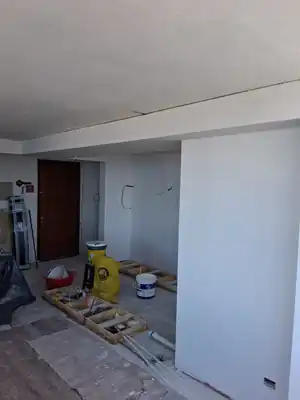
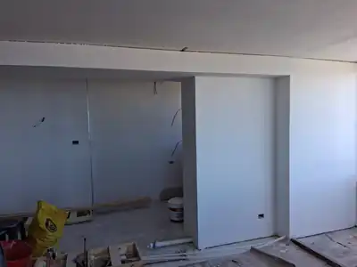

Antes de instalar
El proceso también importa
Mostramos parte de la obra porque una cocina bien terminada comienza mucho antes del montaje: preparación, instalaciones y decisiones de distribución son parte del resultado.

